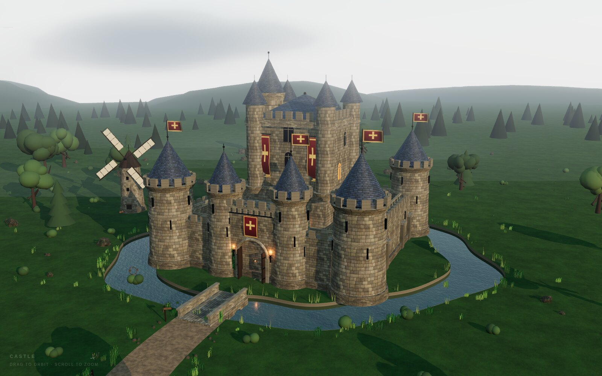

Three.js
outputs.
One brief, given to several models. What comes back is a single-page 3D scene — shown here exactly as it ran.
No reference images, no imported models, no retouching. Just code, procedural textures, and whatever the model decided a castle should feel like.
- Models01
- Scenes01
- Errors0
The outputs
Drag to orbit · scroll to zoom

DeepSeek
V4.1 Flash · Free
The castle
A moat, a gatehouse, a keep and a working windmill. Built from boxes, cylinders and canvas textures — no imported models, no image assets.
- Source
- 5 modules
- Assets
- 0 images
- Errors
- 0
Scenes open full-screen. A mouse and a recent browser are enough. View the source ↗
The brief
Same prompt.
No retouching.
Every model gets the same paragraph and the same empty folder. The scene is then published as delivered — including whatever it gets wrong.
- 01
Build a medieval castle in Three.js that fills the browser window and can be orbited with the mouse.
- 02
Keep it to one page. An HTML entry point, ES modules, and the Three.js CDN are the only allowed dependencies.
- 03
Make every texture from code. No downloaded models, no image files, no environment maps from the internet.
- 04
Give it weather and life. A sky, water, moving banners, smoke, birds, and at least one thing that turns.
Screenshots come from the live build. Console-error counts are measured in a fresh page load; “0” means no uncaught errors or failed resource requests.